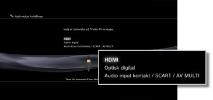
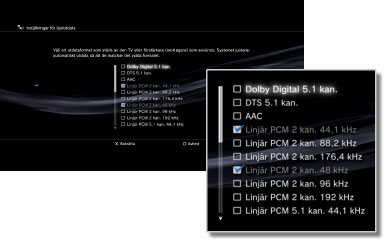
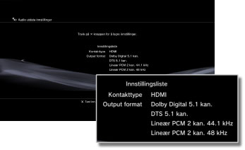

Innstillinger > Lydinnstilling > Audio utdata innstillinger
Audio utdata innstillinger
Juster systemets audioinnstillinger. Disse innstillingene brukes hovedsakelig når systemet er koblet til audioenheter med støtte for digital audio, for eksempel AV-forsterkere (mottakere) for hjemmeunderholdningssystemer.
1. |
Bekreft at audioenheten har støtte for formatene. |
|||||||||||||||||||||||
|---|---|---|---|---|---|---|---|---|---|---|---|---|---|---|---|---|---|---|---|---|---|---|---|---|
2. |
Velg |
|||||||||||||||||||||||
3. |
Velg [Audio utdata innstillinger]. |
|||||||||||||||||||||||
4. |
Velg inngangen på audioenheten. Kanalnumrene og audioformatene som det er støtte for, varierer avhengig av kontakten som er i bruk. 
|
|||||||||||||||||||||||
5. |
Velg alle audioformater.  |
|||||||||||||||||||||||
6. |
Kontroller innstillingene.  |
|||||||||||||||||||||||
7. |
Lagre innstillingene. |
|||||||||||||||||||||||

 -knappen.
-knappen.Tips
- [Lineær PCM 2 kan.] lyden stilles på utgang fra alle utgangsforbindelsen som standard. Hvis du endrer lydutgangsinnstillingene, vil bare lydutgangen komme fra de kontaktene som ble innstilt.
- Hvis du endrer lydutgangsinnstillingene, vil ikke systemet kunne gi utgangslyd fra flere utgangsforbindelser samtidig. For eksempel, hvis systemet ditt er koblet til en TV via en HDMI-kabel og til en lydenhet via en digital optisk kabel og du bytter til [Optisk digital] under [Audio utdata innstillinger], vil det ikke lenger sendes ut lyd fra TV-en. For å sende ut lyd fra TV-en, bytt innstillingen til [HDMI], eller velg
 (Innstillinger) >
(Innstillinger) >  (Lydinnstilling) > [Flere audio utganger] og still inn alternativet til [på].
(Lydinnstilling) > [Flere audio utganger] og still inn alternativet til [på]. - Hvis du velger [Lineær PCM 2 kan. 88,2 kHz] eller [Lineær PCM 2 kan. 176,4 kHz] i trinn 5, kan lyden komme i intervall eller ikke sendes fra enkelte lydutstyr.
- Når du bruker HDMI-kabelen, kan kun [Lineær PCM 2 kan.]-lyd overføres fra PlayStation®2 og PlayStation®-formatprogramvare. For å overføre Dolby Digital eller DTS-lyd må du koble PS3™-systemet og lydenheten sammen med en digital optisk kabel og bytte til [Optisk digital] under [Audio utdata innstillinger].
- Hvis en enhet som ikke er kompatibel med HDCP (High-bandwidth Digital Content Protection) standard kobles til systemet med en HDMI-kabel, kan det ikke sendes video og/eller lyd ut fra systemet.
Merknader
- Enkelte PlayStation®2 eller PlayStation®-programvareformattitler kan ha en annen prestasjon på PS3™-systemet enn på PlayStation®2 eller PlayStation®-systemene, eller fungerer muligens ikke ordentlig med PS3™-systemet.
- PlayStation®2 programvareformat kan dessuten ikke spilles av på enkelte PS3™-systemer. For mer informasjon, se [Typer plater som kan spilles av], besøk SCE-websiden for ditt område eller se dokumentasjonen som fulgte med PS3™-systemet.